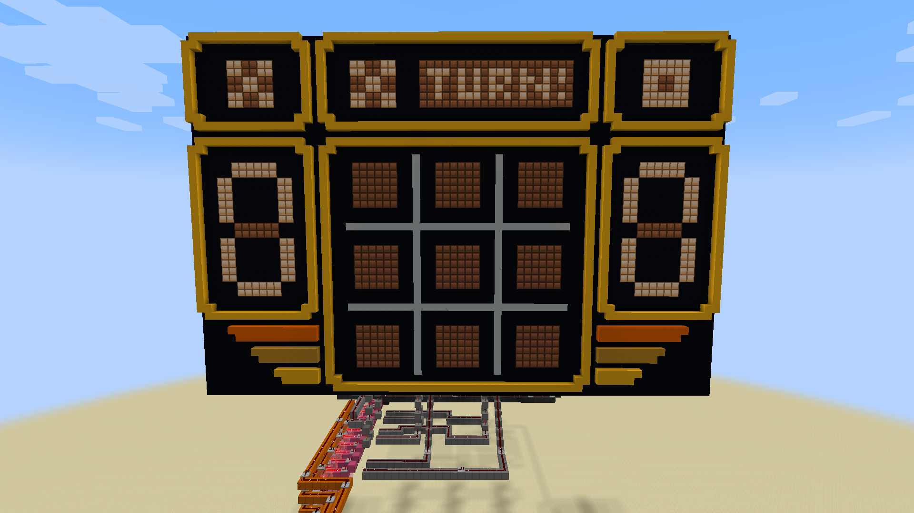

Tic Tac Toe in Minecraft
Overview
I built a fully functional Tic Tac Toe game in Minecraft using only redstone components, with no mods or command blocks. The game was designed for two players who alternate turns, with each player's pieces represented by 'X' and 'O' shapes stored in a ROM.

Logic & Design
The game logic was implemented entirely using boolean logic and redstone circuits, including AND, OR, and NOT gates. I used several digital electronics techniques — multiplexers, encoders, and decoders — to manage the game state and determine the winner, with a score display on the side of the board.
Results & Reflections
The project required careful planning to ensure it was both functional and visually appealing within Minecraft's constraints. It allowed me to apply my knowledge of digital logic design and boolean algebra in a hands-on and creative way, and deepened my understanding of how physical logic circuits work.